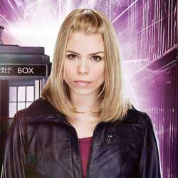

|
| Home The Doctors The Companions The Villians Show History |
Rose TylerRose Tyler is a fictional character portrayed by Billie Piper in the British science fiction television series Doctor Who, and was created by series producer Russell T Davies. With the revival of Doctor Who in 2005, Rose was introduced as a new travelling companion of series protagonist, the Doctor, in his ninth and tenth incarnations. The companion character, intended to act as an audience surrogate, was key in the first series more so than any other to introduce new viewers to the mythos of Doctor Who, which had not aired regularly since 1989. Piper received top billing alongside Christopher Eccleston and David Tennant for the duration of her time as a regular cast member. A regular for all of series one (2005) and series two (2006), Piper later returned for three episodes of the programme's fourth series (2008) and appeared in feature length specials in both 2010 and 2013. In the series' narrative, Rose is introduced in the eponymous series one premiere as a 19-year-old working class shop assistant from London, alongside her own supporting cast in the form of her mother Jackie Tyler (Camille Coduri) and her boyfriend Mickey Smith (Noel Clarke). Over the course of the first series Rose's human actions and responses contrast with the Doctor's alien perspectives. He comes to value and depend on her and sacrifices his Ninth incarnation for her. Rose grows increasingly trusting of the new Doctor and comes to realise she has fallen in love with him. The two appear to be forever separated in the series two finale, although Rose's temporary return in the fourth series gives her relationship with the Doctor a resolution. In promoting the series, both Piper and Eccleston stressed Rose's heroic characteristics whilst Davies highlighted her down to earth qualities and quintessential Britishness. Critical reaction noted that the character was more developed, independent and equal to the Doctor than previous companions had been, whilst the character's overall role in the narrative of the first two series was praised. However, reaction to the character's 2008 return was more mixed. Piper won numerous awards for her portrayal of Rose —including two National Television Awards —and since her initial role in the series has ranked highly in numerous 'best companion' polls. After leaving as a series regular, Piper experienced success in other high-profile roles as an actress which has been partly attributed to her performances in Doctor Who.
|
|
Madeleine Schwartz Ann Marie Skjold |
Content derived from Dr. Who Wikipedia.
|